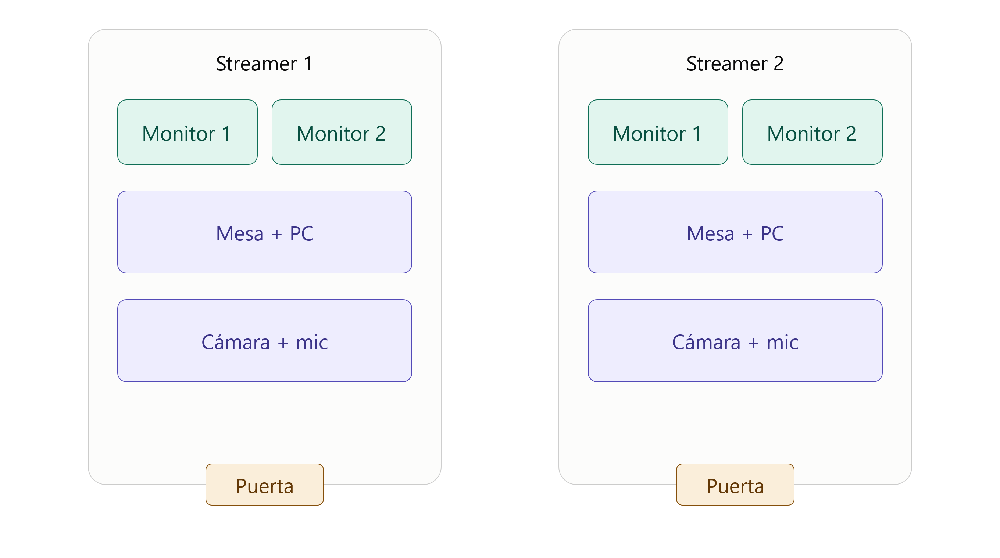

Ordenador : PC gaming de gama alta, preparado
para jugar y emitir en directo.
Primer monitor: Monitor QHD de 27", 240 Hz o superior.
Segundo monitor: Monitor adicional para chat, OBS y
herramientas de streaming
Ratón : Ratón gaming inalámbrico de gama alta.
Teclado : Teclado mecanico premium.
Silla : Silla ergonómica premium.
Cascos : Auriculares de alta calidad con
sonido preciso.
Microfono : Micrófono dedicado de calidad profesional,
con brazo articulado y filtro antipop.
Camara : Cámara profesional con capacidad
de grabación y emisión de alta calidad.
Iluminacion : Luz frontal regulable para mejorar
la imagen de la cámara.
|

|